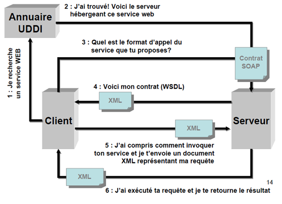

Le Fonctionnement des Web Services

Les services Web reprennent la plupart des idées et des principes du Web (HTTP, XML), et les appliquent à des interactions entre machines. Comme pour le World Wide Web, les services Web communiquent via un ensemble de technologies fondamentales qui partagent une architecture commune. Ils ont été conçus pour être réalisés sur de nombreux systèmes développés et déployés de façon indépendante.
Le fonctionnement des services Web s'articule autour de trois acteurs principaux illustrés par le schéma suivant :

×

- Le fournisseur de service : « Service Provider » ou « Serveur » qui rend le service disponible sur le réseau.
- Les consommateurs de services : « Service Clients » ou « Service Requesters » ou « Client » correspond au demandeur de service web, envoyant des requêtes http à travers le réseau pour utiliser les services.
- L’annuaire : « UDDI » correspond à un registre de descriptions des services web offrant des facilités de publication des services web à l’intention des fournisseurs, ainsi que des facilités de recherche des services web à l’intention des clients.